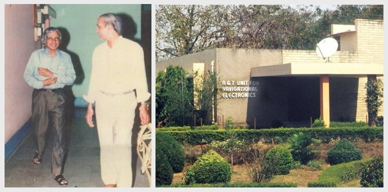

Research and Training Unit for Navigational Electronics (NERTU)
About NERTU
The Department of Electronics(DoE), Government of India,
recognizing the importance of Navigational Electronics to the country and the specific needs
of the Department of Civil Aviation and the Indian Air Force, decided to create a national
centre
for expertise in this area. Proposals were invited, and the one submitted by the Department
of Electronics and Communication Engineering, Osmania University was selected. Thus, the
Research and Training Unit for Navigational Electronics(NERTU) came into being on 1st April,
1982 as a sponsored project of the DoE. It continued to enjoy this status until September
1992.
In recognition of the excellent services rendered by it to the user organizations, then the Government of Andhra Pradesh has made it as permanent establishment, a research centre of Osmania University by funding its recurring expenditure. The first Advisory Committee (1982-1987) was headed by the former President of India, Bharata Ratna Dr. A.P.J. Abdul Kalam, who was then the Director of Defence Research Development Laboratory (DRDL), Hyderabad. Today, NERTU is the focal point for research and training, in the frontier areas of Navigational Electronics in India. It is the first University centre to work in the area of Global Positioning System(GPS) and GPS Aided Geo Augmented Navigation(GAGAN) System. Dr.A.P.J.Abdul Kalam referred the “Development of Signal processing algorithms for NAG missile by NERTU”, in his autobiography – “Wings of Fire”.
In recognition of the excellent services rendered by it to the user organizations, then the Government of Andhra Pradesh has made it as permanent establishment, a research centre of Osmania University by funding its recurring expenditure. The first Advisory Committee (1982-1987) was headed by the former President of India, Bharata Ratna Dr. A.P.J. Abdul Kalam, who was then the Director of Defence Research Development Laboratory (DRDL), Hyderabad. Today, NERTU is the focal point for research and training, in the frontier areas of Navigational Electronics in India. It is the first University centre to work in the area of Global Positioning System(GPS) and GPS Aided Geo Augmented Navigation(GAGAN) System. Dr.A.P.J.Abdul Kalam referred the “Development of Signal processing algorithms for NAG missile by NERTU”, in his autobiography – “Wings of Fire”.

Objectives
1) Conducting research in the frontier areas of Navigational Electronics, Signal
Processing
and Communication, covering the current state-of-the art technologies.
- Propose the projects for funding from government agencies and industries and then execute the sponsored and consultancy projects.
- Publication of Research Results in Technical Reports and Journals.
- Presentation of Research Results in Conferences.
- Organizing short term courses, workshops, symposia and conferences for engineers, scientists, academicians and students at PG and PhD level.
- Guiding B.E., M.E., and Ph.D. students by Identifying of research topics based on the requirements of the sponsoring agencies and on-going research work at national and international level in the areas of Signal Processing, Communication and Navigation.
About Osmania University (OU) OSMANIA.AC.IN

Know About Director
Prof. P. Laxminarayana
Dr. P. Laxminarayana (PLN) is the Professor and Director of NERTU, OU. He got his M.E.
and Ph.D. from the Department of Electronics and Communication Engineering, Osmania
University in 1994 and 2000, respectively. He has been working for NERTU, Osmania
University, since 1994. His passion is Technology Development, industry-institute
interaction and start-ups. He is involved in executing several sponsored and Consultancy
projects from public and Private Organizations as Principal investigator and
co-investigator. He has taken lien from university from July 2003 to June 2005 to
establish and lead a 13-member team of "DSP and Audio Processing Technology" group at
Hyderabad Development Centre (HDC) of Analog Devices Inc. (ADI). Later, he was also a
consultant to ADI and Lantiq Communications India Pvt. Ltd. By recognizing his services
at HDC-ADI, ADI funded the Department of ECE to establish a Multimedia and ADSPs
laboratory at Osmania University. Three groups of students/alumni members of OU are
working in collaboration with him to develop new products and planning for start-ups. He
was faculty cum coordinator in organizing more than 20 short-term courses in the areas
of Signal Processing, Communication and Navigation. He has published more than 40
Journal and Conference papers and technical reports. He has guided more than 40 ME
students and 2-PhD Students. His areas of research interest are the development and
implementation of Signal and Image Processing algorithms for Communications, Navigation
and Object Recognition. At present, he is working on the development of a GNSS software
Receiver, Integration of GNSS with other navigation systems, ASR and TTS systems, Face
Detection and Recognition, and Instruments for Biotech Industries.